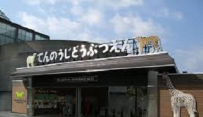

天王寺動物園
天王寺動物園（てんのうじどうぶつえん）大阪市天王寺公園內的大阪市立動物園。於1915年（大正4年）1月1日開園，是日本第三個動物園。園內面積約11公頃，約飼養230種1，1000點的動物，是都市型綜合動物園。2006年的年間總入場者數約186萬人，其中收費入場者數68萬1934人。2006年7月16日，總收費入園人數超過1億人。在日本國內是第二個入場者超過了1億人的動物園。特色除了新西蘭以外，飼養了世界上珍貴的動物-鷸鴕。增加了獅尾猴，鑽床，東北虎，黑犀，仙鶴類，日本鸛，隱鵖，揚子鱷等稀有動物繁殖的力度。另外，1990年代後半，動物的生活地環境儘可能的再現了動物的野外生活。到目前為止，日本首次在水中游泳池透視展示爬蟲類生態館蓼藍毛皮。2006年11月3日至5日舉行的「滅絕危機的動物展」，首次公開了保存的滅絕的日本海獅標本。主展示設施和飼養動物爬蟲類生態館主要飼養動物-密西西比鱷魚，揚子鱷、大鱷龜，亞達伯拉象龜，玳瑁，圓鼻巨蜥，美洲鬣蜥，綠樹蟒，網紋蟒，娃娃魚非洲熱帶草原主要飼養動物-河馬，コフラミンゴ，黑犀，斑鬣狗，倭貓鼬，獅子，鴕鳥，斑馬、愛羚羊，鴕鳥，蹄兔，珍珠雞，球的蟒蛇，非洲禿頂小光亞洲熱帶雨林飼養動物-印度大象夜行性動物館主要飼養動物-鷸鴕，埃及路套蝙蝠，狸，懶猴，犰狳，嬰猴，刷尾負鼠鳥的樂園主要飼養動物-白鸛等 除了這些還飼養有，チュウゴク狼和北極熊，考拉，東北虎，積架，小熊貓，日本鸛等。
●特色
除了紐西蘭以外，飼養了世界上珍貴的動物-鷸鴕。增加了獅尾猴，鑽床，東北虎，黑犀，仙鶴類，日本鸛，隱鵖，揚子鱷等稀有動物繁殖的力度。另外，1990年代後半，動物的生活地環境儘可能的再現了動物的野外生活。到目前為止，日本首次在水中游泳池透視展示爬蟲類生態館蓼藍毛皮。2006年11月3日至5日舉行的「滅絕危機的動物展」，首次公開了保存的滅絕的日本海獅標本。
●歷史
●1884年大阪府立博物館場設置（大阪市東區內本町橋詰町，現在的マイドームおおさか）附屬動物檻。
●1909年北區發生大火的影響建築物燒掉一半。以此為契機由大阪府大阪市管轄。
●1914年從內本町轉移到大國町，動物的「搬家」舉行。
●1915年日本第三個動物園「大阪市立動物園」開園。
●1921年蘇門答臘犀牛來園。4年後死。
●1925年日本首次成功人工孵化丹頂鶴。
●1932年黑猩猩的「尼小姐」來園。在珍芸博得人氣。
●1940年「尼小姐」死。
●1943年- 1944年由於戰爭的影響，狼，熊，獅子，豹，鬣狗，老虎等10種26頭被殺死（戰時猛獸處分）。
●1950年2頭亞洲大象的「春子」、「ユリ子」來園。
●1951年黑猩猩的「シュジー」來園。跟「尼小姐」一樣的受歡迎。2003年死。
●1960年首次在國內成功人工孵化大眼斑雉。
●1964年首次在國內成功繁殖白鸛，ハゲガオホウカンチョウ。
●1966年首次在國內成功繁殖刺蝟。
●1970年為了紀念大阪世博會召開，紐西蘭政府捐贈鷸鴕。亞洲象來園。
●1972年首次在國內成功繁殖阿比西尼亞獅子，蒼鷺，黑尾鷗。
●1974年日中邦交復甦紀念，上海動物園捐贈。モウコガゼル和小黑狼。
●1976年首次在國內成功繁殖南美國海狗，玻利維亞松鼠猴。
●1977年首次在國內成功繁殖モウコガゼル。
●1978年在日本國內初次成功繁殖叢林貓，印度癌（人工孵化），クリイロミズヘビ。
●1979年隱秘火雞來園。首次在國內成功繁殖ベニジュケイ。
●1982年鷸鴕來園。首次在國內成功繁殖印度勺雞。
●1984年塔斯馬尼亞魔鬼在日本第一次來園。第二年，首次在國內繁殖。
●1987年首次在本州成功繁殖北極熊。鳥的樂園建設完成。
●1988年鷸鴕來園。
●1989年考拉來園。
●1991年，北極熊ユキコmiyuki出生。
●1993年第一次產卵鷸鴕。
●1995年ZOO 21計劃提案。蓼藍毛皮完成。
●1997年新河馬舍完成。
●1998年新犀牛舍完成。北極熊ユキコ，ユキスケ分娩。
●2000年非洲熱帶草原地帶草食動物區完成。亞洲象的ユリ子死。
●2004年亞洲熱帶雨林區（大象舍）完成。北極熊的ユキコ死。
●2006年非洲熱帶草原地帶肉食動物區完成。
●2010年河馬的natsuko死。
●2011年從浜松市動物園的北極熊的巴芬（雌）來園。